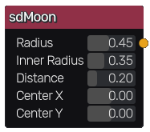

sdMoon node
The sdMoon node generates a signed distance image for a moon.
Inputs
The sdMoon node does not accept any input.
Outputs
The sdMoon node generates a signed distance function for a moon.
Parameters
The sdMoon node accepts the following parameters:
Radius of the moon.
Inner Radius of the inner circle.
Distance of the inner circle away from the origin.
The position of the center along X and Y axis.